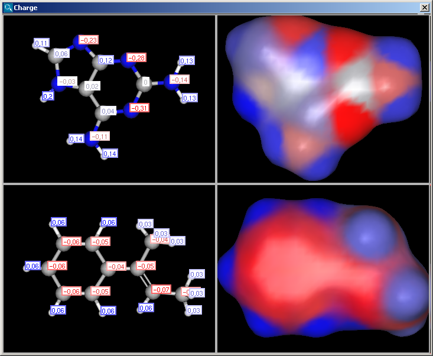
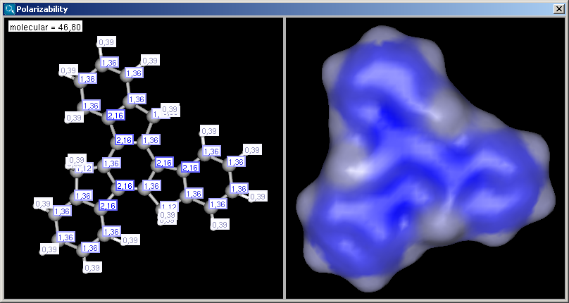
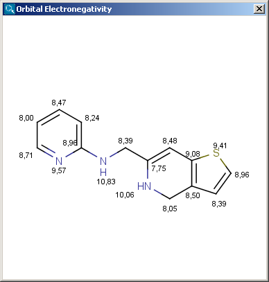

The partial charge distribution determines many physico-chemical
properties of a molecule, such as ionization constants, reactivity and
pharmacophore pattern. Use Charge plugin to compute the partial charge
value of each atom. Total charge is calculated from sigma and pi charge
components, and any of these three charge values can be displayed. You can change
between these by setting the "Type" option in the Charge Options
panel; by default, the total charge is displayed. You can also
Learn more about how the plugin calculates the
partial charge.
|
The numbers in brackets refer to the charge sums of implicit H atoms, and displayed only if the "Increment of Hs" option is switched on in the Charge Options panel.
|  |
The electric field generated by partial charges of a molecule spread through intermolecular cavities and the solvent that the molecule is solved within. The induced partial charge (induced dipole) has a tendency to diminish the external electric field. This phenomenon is called as polarizability. The more stable each ionized site is the more its vicinity is polarizable. This is why atomic polarizability is an important factor in the determination of pKa and why it is considered in our pKa calculation plugin. Atomic polarizability is altered by partial charges of atoms. Our calculation is based on Ref.3., and takes into account the effect of partial charge upon atomic polarizability.
 |
 |
Partial charge distribution of the molecule is governed by the
orbital electronegativity of the atoms contained in the molecule.
Learn more about how the plugin calculates
orbital electronegativity.
|  |